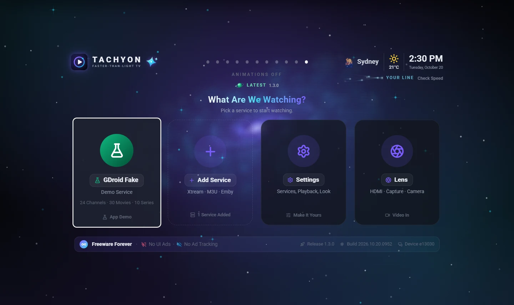

Tachyon Lens: Watch HDMI and USB Video on Your Computer
Tachyon Lens shows an HDMI capture card or a camera in a clean window on Windows, macOS and Linux — with sound where you want it, a TV frame and pin on top.

Plug a games console, a set-top box or a camera into your computer through a USB HDMI capture card, and you usually need clunky capture software to see it. Tachyon Lens shows it in a clean window that is just the picture — no recording tools, no clutter.
Lens comes two ways: built into Tachyon's desktop app (the Lens tile on Landing), and as a small separate app for Windows, macOS and Linux on the Download page. Both are the same viewer.
Start Watching
- Connect your capture card or camera.
- Open Lens: the Lens tile on Tachyon's Landing screen, or the Tachyon Lens app.
- Pick a source from Sources. The window becomes the picture.
- Move the mouse to show the bars; they fade away again on their own.
Sources that can't be opened right now — busy in another app, or unplugged — show dimmed at the end of the list, with the reason. Look Again checks them again, and a source you plug in later appears by itself.
The Controls
| Button | Key | What It Does |
|---|---|---|
| Volume | ↑ ↓ | Lens's own volume, up to 250 % |
| Mute | M | Sound off and on |
| Source and Sound | S | Opens the panel: the source, Sound From and Play On |
| Snapshot | C | Saves the current picture as a PNG |
| Fit the Window to the Picture | — | Shapes the window to the picture |
| Centre on Main Screen | — | Brings the window back to the middle of your main display |
| TV Frame | T | A thin TV bezel around the picture |
| Pin on Top | P | Keeps Lens above your other windows |
| Stop | Esc | Back to Sources (from the Sources list in Tachyon: back to Tachyon) |
Hold the picture anywhere to move the window. Each source keeps its own window size, and its own TV Frame and Pin on Top choice.
Sound Where You Want It
In the Source and Sound panel:
- Sound From picks the sound input — usually the capture card itself.
- Play On picks your speakers or headphones.
- The Sound Stabilizer (on by default) keeps the level steady, as in Tachyon's player.
Tidy Up Your Sources
- Rename a source: the pencil on its card, or F2. The name stays in Lens only.
- Reorder sources by dragging their cards, or with Alt ↑ / Alt ↓.
Questions and Answers
Does Lens record?
No. Lens is a viewer: it shows the picture and plays the sound. Snapshot saves a still picture.
Do I need the separate Lens app if I have Tachyon?
No. The desktop Tachyon has Lens built in (Landing → Lens). The separate app is for people who only want the viewer.
Is it the same version as Tachyon?
Yes. Lens is released with every desktop release of Tachyon, with the same version number.